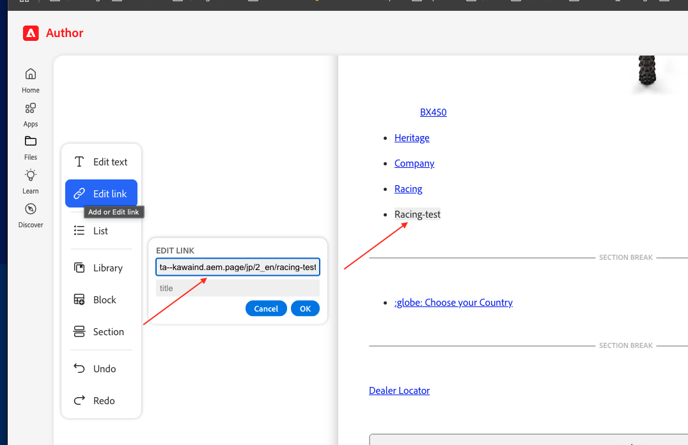
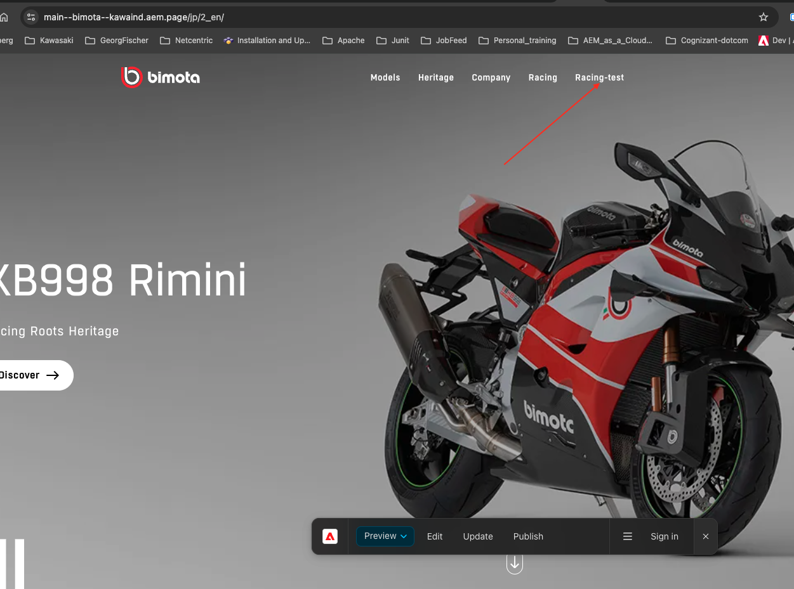

Header (Nav)
The site header — model names, images, and links — authored in a document named 'nav'.
The site header lives in a document named 'nav' in each locale folder, and contains the website's header elements: model names, images, and a few titles with links.
Finding and opening the nav document
Navigate to the document named nav under the locale folder (e.g. da.live/#/kawaind/bimota/jp/2_en) and open it to view and modify it. Inside, you'll see various model names with images and a few titles with links — this becomes the header of the website. In a typical screenshot: the model's image is what's shown when that model is clicked, the model name is the linked label, and there's an automatic hover effect on each model entry.
Changing an existing model image
You can add or change existing images of the models directly in the nav document: click to copy or remove an image, then paste or drop a new image as preferred. A short reference video showing how this header looks live on the site: header-nav.webm.
Adding a brand-new nav option (e.g. “Racing”)
- Create a new page and name it (e.g.
racing-test) in the same locale folder. - Preview the new page and copy its URL.
- Go back to the nav document, select the new option's text (e.g. “Racing-test”), click Edit link, and paste the page URL to link it.
- Click Preview again on the nav document.
- View the live page with the header to confirm the new nav item now appears and links correctly.
What you fill in
| nav document | One per locale folder (e.g. /jp/2_en/nav) — holds every header entry for that locale. |
| Model image | Shown when that model/nav item is active or hovered. Click to copy or remove an image, then paste or drop a new one as preferred. |
| Model name / link text | The visible label in the header, linked to its target page. |
| Hover effect | Automatic on every model entry — nothing to configure. |

The nav document in da.live: model images, names, and links that make up the header.

The published site header showing a newly added 'Racing' / 'Racing-test' nav item.
Copy/paste snippet
<!-- Not authored per-page — edit the shared 'nav' document for the locale instead, e.g. /jp/2_en/nav -->